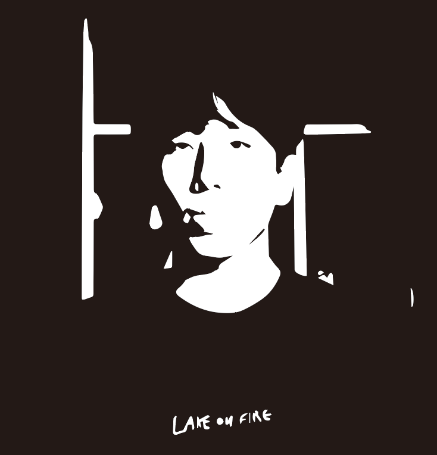

Born in 1997 South Korea, I’ve studied most of the times in Korea. I spent two years in Rockville, Maryland when I was in first grade in elementary school. I had no interest before my high school sophomore year. After realizing that science was not my way, I’ve been working on various works based on my idea sketches and visions toward the world. The characteristics of my works are very different compare to before college and after college.